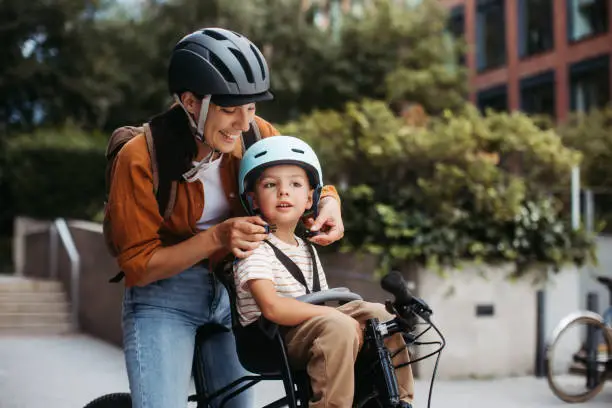
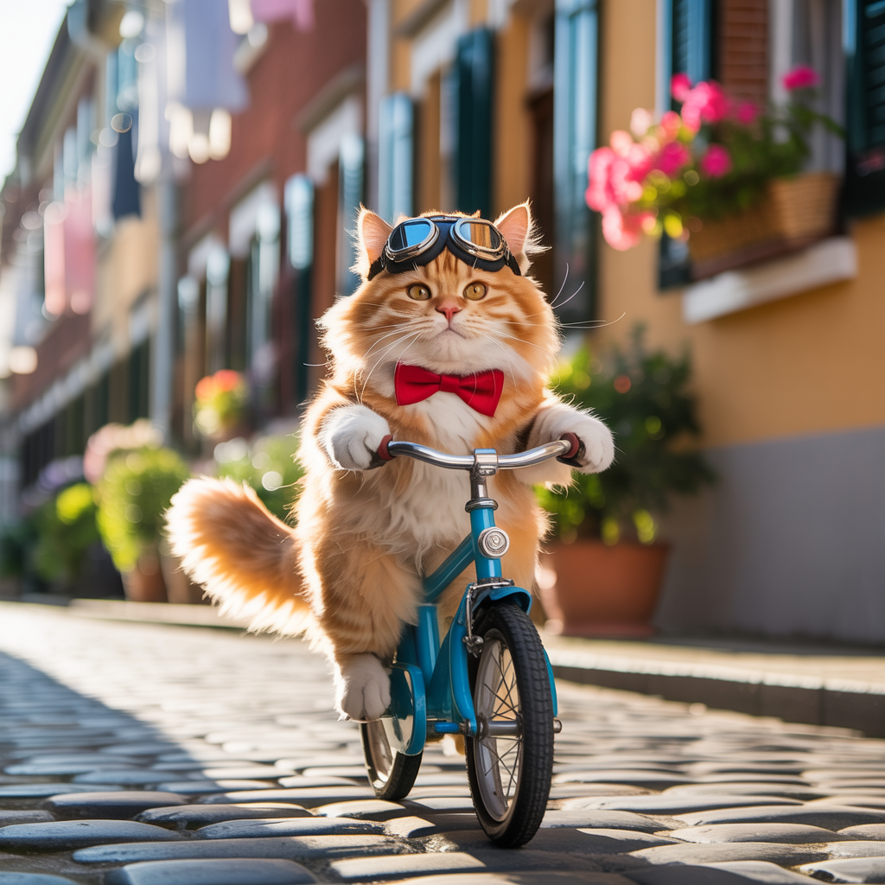

Introdução
Este site tem como objetivo informar ciclistas, motoristas e pedestres sobre as leis de trânsito que envolvem o uso da bicicleta no Brasil. Abordamos os principais direitos e deveres dos ciclistas, regras de segurança, e como garantir uma convivência harmônica nas vias públicas.
As bicicletas são veículos previstos no Código de Trânsito Brasileiro e merecem respeito e proteção. Um trânsito seguro depende da consciência de todos. Aqui, mostramos como todos podem contribuir para vias mais humanas e organizadas.
Nosso compromisso é promover a educação no trânsito, reforçando a importância da empatia e do compartilhamento responsável do espaço público. Seja você um ciclista experiente, alguém que está começando a pedalar, um motorista ou um pedestre, encontrará aqui informações claras e atualizadas para tomar decisões mais seguras e conscientes no dia a dia.
Além de orientações sobre normas e condutas, também destacamos boas práticas de convivência e iniciativas bem-sucedidas em mobilidade urbana. Acreditamos que a bicicleta é uma aliada na construção de cidades mais sustentáveis, acessíveis e saudáveis — e que a informação é a melhor ferramenta para transformar o trânsito em um ambiente mais justo e colaborativo.
Explore nossos conteúdos, compartilhe com sua comunidade e ajude a fortalecer a cultura da paz no trânsito. Juntos, podemos fazer a diferença.

Direitos e Deveres dos Ciclistas
O Código de Trânsito Brasileiro (CTB) reconhece o ciclista como parte integrante do trânsito, com direitos e deveres assim como os demais usuários das vias públicas. O ciclista tem direito ao uso da via e deve ser respeitado por motoristas e pedestres. Quando houver ciclovias, ciclofaixas ou acostamentos apropriados, os ciclistas devem utilizá-los, promovendo maior segurança para todos. Nas vias compartilhadas, é essencial o respeito mútuo entre motoristas e ciclistas, sendo obrigatória a manutenção de uma distância lateral mínima de 1,5 metro durante ultrapassagens, conforme determina o CTB.
Além dos direitos, os ciclistas também possuem responsabilidades. É fundamental que respeitem as sinalizações de trânsito, não trafeguem na contramão, e sinalizem com antecedência qualquer mudança de direção, contribuindo para um trânsito mais previsível e seguro. O uso de equipamentos obrigatórios, como campainha, espelho retrovisor do lado esquerdo e sinalização noturna (refletores dianteiros, traseiros e laterais), é indispensável, especialmente ao pedalar em horários de pouca visibilidade ou à noite.
A segurança no trânsito é um compromisso coletivo. Motoristas, ciclistas e pedestres devem agir com atenção e empatia, reconhecendo que todos têm o direito de ir e vir com segurança. Promover a convivência harmoniosa entre os diversos modos de transporte é essencial para a construção de cidades mais humanas e sustentáveis.

Segurança no Trânsito
O uso de equipamentos de segurança é essencial para a proteção do ciclista. Itens como capacete, luzes dianteiras e traseiras, refletores nas rodas e na parte traseira da bicicleta, além de coletes ou faixas refletivas, são fundamentais para aumentar a visibilidade e reduzir os riscos de acidentes. Embora o capacete não seja obrigatório por lei em todas as situações, seu uso é altamente recomendado, pois protege contra impactos em caso de queda ou colisão.
Adotar atitudes responsáveis no trânsito também é parte importante da segurança. Respeitar o fluxo da via, ou seja, circular sempre no mesmo sentido dos veículos, é uma regra básica que previne conflitos e colisões. Evitar pedalar sobre calçadas — exceto onde for expressamente permitido ou onde houver sinalização específica — contribui para a segurança dos pedestres e evita multas. Sinalizar com os braços antes de fazer conversões ou parar, assim como indicar presença com a campainha, são gestos simples que melhoram a comunicação no trânsito.
A visibilidade do ciclista, especialmente no período noturno, é um fator determinante para evitar acidentes. Manter as luzes acesas e utilizar roupas claras ou com elementos refletivos ajuda os motoristas a perceberem a presença do ciclista a tempo de tomar decisões seguras. Além disso, é importante estar atento a buracos, irregularidades no asfalto, bueiros abertos e portas de carros estacionados que possam ser abertas inesperadamente.
Veículos de grande porte, como ônibus e caminhões, apresentam pontos cegos em que o ciclista pode não ser visto. Por isso, é fundamental manter uma distância segura desses veículos, evitando ultrapassagens arriscadas ou deslocamentos muito próximos. Conduzir com atenção, manter as duas mãos no guidão e os olhos atentos ao entorno é a chave para um trajeto seguro e tranquilo. O cuidado com a própria segurança também contribui para a segurança de todos no trânsito.
Prevenção de Acidentes
Evitar comportamentos de risco é fundamental para promover um trânsito mais seguro e harmonioso para todos. Motoristas jamais devem ameaçar, pressionar ou “fechar” ciclistas — essas atitudes além de desrespeitosas, são extremamente perigosas e configuram infrações graves segundo o Código de Trânsito Brasileiro. A pressa ou a impaciência nunca justificam colocar a vida de alguém em risco. O mesmo vale para os pedestres, que devem evitar caminhar sobre ciclovias e ciclofaixas, locais exclusivos para o trânsito de bicicletas, salvo em casos de travessia sinalizada ou onde a legislação permitir.
A base de um trânsito seguro está na educação, no respeito mútuo e na empatia entre todos os usuários da via. Cada um tem seu espaço e seu tempo, e reconhecer isso é o primeiro passo para reduzir conflitos e acidentes. Promover atitudes positivas, como a cortesia e a paciência, ajuda a criar um ambiente urbano mais amigável e acessível, incentivando o uso da bicicleta como meio de transporte sustentável.
Medidas simples, porém eficazes, podem salvar vidas. Manter distância segura de outros veículos e obstáculos, evitar o uso do celular ou fones de ouvido enquanto pedala (para manter a atenção total no ambiente), e realizar revisões periódicas na bicicleta — como checar os freios, pneus, correntes e iluminação — são cuidados básicos que fazem toda a diferença. Uma bicicleta em boas condições técnicas é essencial para evitar falhas durante o trajeto.
Além das atitudes individuais, ações coletivas como campanhas de conscientização, programas educativos em escolas e empresas, e a melhoria da infraestrutura urbana são indispensáveis. Sinalização clara, ciclovias bem planejadas, iluminação adequada e fiscalização efetiva contribuem diretamente para a redução de acidentes e para a valorização da mobilidade ativa. Quando todos fazem sua parte, o trânsito se torna mais seguro, humano e eficiente.

Curiosidades
🚴 Você sabia que o uso diário da bicicleta pode reduzir em até 40% o risco de doenças cardíacas? Além de ajudar o meio ambiente, pedalar traz grandes benefícios para a saúde física e mental.
🌍 Em cidades como Amsterdã e Copenhague, mais da metade da população usa bicicleta como principal meio de transporte. Esses locais são referências mundiais em mobilidade urbana sustentável.
🔧 A manutenção preventiva da bicicleta é essencial. Verificar freios, pneus e corrente regularmente pode evitar acidentes e prolongar a vida útil do equipamento.
🚦 O Brasil tem leis específicas para proteger os ciclistas no trânsito, mas o respeito e a consciência de todos é o que realmente faz a diferença.
